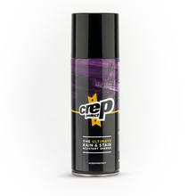

El gusto por los Sneakers no es algo nuevo en nuestro país, pues desde ya hace muchos años
existe esta pasión por coleccionar Sneakers, pero de unos 5 años a la fecha ha ido surgiendo
este habito de cuidar el estado de los Sneakers; ya que en este mundo el coleccionismo es una
puerta al mercado de la reventa y que practicamente puede hacer que una persona pueda vivir de
coleccionar Sneakers y revenderlos a precios verdaderamente inimaginables.
De ahi que en los ultimos años el cuidado de los Sneakers se haya vuelto un factor de suma importancia,
dado que unos Sneakers en una buena condición y que practicamente parezcan nuevos significan un mayor
precio de reventa. Además claro de tener una apariencia muy freca al momento de usarlos.
A continuación te presentamos algunos consejos para mantener tus Sneakers como el primer día!!!
Productos CrepProtect
La siguiente es una lista de productos de cuidado y limpieza de Sneakers,
todos los productos pertenecen a la marca CrepProtect y puedes adquirirlos en el enlace
Cure Kit de Viaje
Crep Protect Trees
Sneaker Shield
Crep Protect Spray

Proceso de uso de los productos Crep Protect
Limpieza
Cure Kit
En el Cure Kit se nos incluye un cepillo, un paño de microfibra y la solución para limpiar nuestros Sneakers,
estos elementos los vamos a combinar con el resto de productos para obtener el mejor resultado posible,
para antes, durante y despues de usar nuestros Sneakers
Prepararemos nuestros Sneakers para ser limpiados, removeremos las agujetas y le colocaremos los Crep Trees
En un recipiente colocaremos agua tibia.
Colocaremos un poco de la solucion Crep en el cepillo y remojaremos en el recipiente de agua y escurrimos el exceso de agua.
Comenzaremos a tallar nuestros Sneakers con el cepillo con solución Crep siempre haciendo circulos y tratando de llevar un orden
o hacer la limpieza en por secciones.
Una vez terminada una sección removeremos la espuma que se hace con el paño de microfibra
(Es importante que nos aseguremos de remover todo el exceso de agua y espuma).
Los puntos 3 y 4 se repetiran hasta haber limpiado el par de Sneakers por completo.
Una vez limpios nuestros Sneakers los dejaremos secar por 24 horas.
Para ejemplificar el proceso se muestra un video del sitio oficial de CrepProtect en YouTube
Protección
Los siguientes productos sirven para cuidar nuestros Sneakers cuando nos estamos usando o incluso cuando los usamos.
CrepProtect Trees
Estas hormas estan hechas para que nuestros Sneakers no pierdan su forma al momento de que los guardamos o
los dejamos de usar, ya que asemejan la curvatura del pie, y generan una presión entre el talon y la punta
para mantener su forma como si estuvieran nuevos, ademas de que tambien nos auxilian al momento de hacer
la limpieza de nuestro Sneakers, pues no permite que estos se deformen por el agua o al momento de secarse.
Para ejemplificar el uso se muestra un video del sitio oficial de CrepProtect en YouTube
CrepProtect Spray
Con este Spray podremos proteger nuestros Sneakers mientras los usamos, ya que ayudaran a prevenir que
estos se manchen de liquidos, polvo o cualquier otra sustancia que pueda ser redamada en ellos.
Para ejemplificar el uso se muestra un video del sitio oficial de CrepProtect en YouTube
CrepProtect Shields
Estas pequeñas hormas de plastico suave sirven para evitar que se generen esas molestas arrugas en nuestros
Sneakers cuando vamos caminando; estas se colocan adentro del Sneaker y posteriormente nos los ponemos con
con normalidad, lo que hara que esas arrugas no aparezcan mas.
Para ejemplificar el uso se muestra un video del sitio oficial de CrepProtect en YouTube
Recomendación!!!!
Los productos antes mencionados son productos que uso personalmente y que con toda seguridad puedo recomendar y
validar su eficacia, la forma en la que cuido mis Sneakers es algo que tomo mucho en cuenta y creo que hablan
mucho de como es una persona, pues unos Sneakers limpios siempre son señal de que es una persona que cuida los detalles;
Asi que aunque no te dediques al tema de la reventa, considero que para cuidar tu imagen y lucir siempre fresco con tus Sneakers